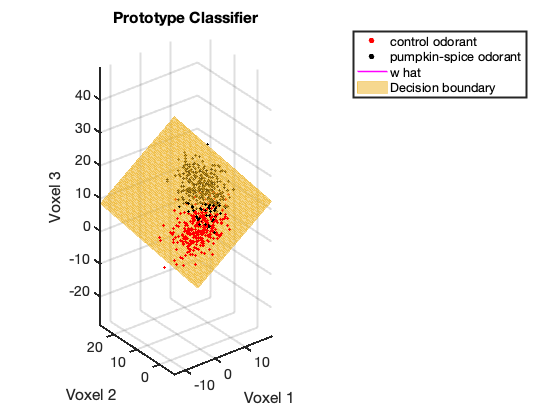
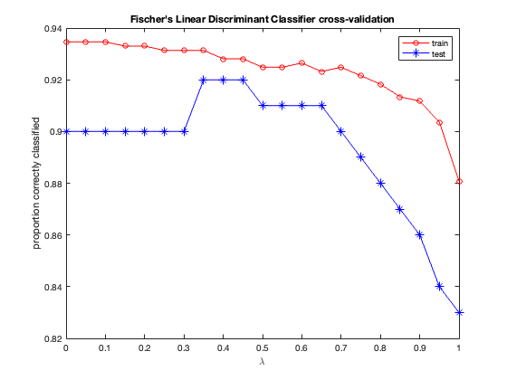
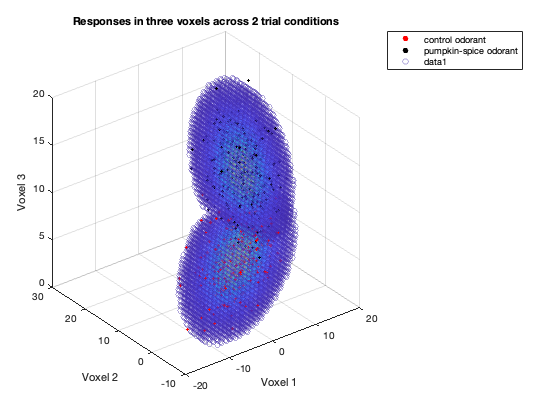

Contents
clear; close all; clc;
Loading the datasets and segregating them based on conditions:
load('experimentData.mat') load('newMeasurements.mat') cond1_index = find(trialConds == 1); cond2_index = find(trialConds == 2); data1 = data(cond1_index, :); data2 = data(cond2_index, :); test1_index = find(newConds == 1); test2_index = find(newConds == 2); test1 = newMeasurements(test1_index, :); test2 = newMeasurements(test2_index, :);
prototype classifier
mean_data1 = mean(data1); % mean of old data condition 1 mean_data2 = mean(data2); % mean of old data condition 2 w = mean_data2 - mean_data1; % Discriminant vector w_norm = sqrt(sum(w.^2)); % Norm of discriminant vector w_hat = w./w_norm; % Normalized discriminant vector midpoint_data = (mean_data1 + mean_data2)/2; % Midpoint of means of datasets figure(); scatter3(data1(:, 1), data1(:, 2), data1(:, 3), 10, 'r', ... 'filled', 'DisplayName', 'control odorant') hold on; scatter3(data2(:, 1), data2(:, 2), data2(:, 3), 10, 'k', ... 'filled', 'DisplayName', 'pumpkin-spice odorant') legend(); xlabel('Voxel 1'); ylabel('Voxel 2'); zlabel('Voxel 3'); title('Responses in three voxels across 2 trial conditions') plot3([midpoint_data(1) - w_hat(1)/2, midpoint_data(1) + w_hat(1)/2], ... [midpoint_data(2) - w_hat(2)/2, midpoint_data(2) + w_hat(2)/2], ... [midpoint_data(3) - w_hat(3)/2, midpoint_data(3) + w_hat(3)/2], ... 'm-', 'DisplayName', 'w hat', 'LineWidth', 1.5) axis equal; x_dec_boundary = xlim; % x limits of the graph % Computing decision boundary given w_hat y_dec_boundary = ylim; z_dec_boundary = decision_boundary(x_dec_boundary, y_dec_boundary, ... midpoint_data, w_hat); % Computing decision boundary plane given the discriminant vector and the % midpoint pointsss = 1e2; x_range = linspace(x_dec_boundary(1), x_dec_boundary(2), pointsss); y_range = linspace(y_dec_boundary(1), y_dec_boundary(2), pointsss); z_range = zeros(pointsss, 1); for zz = 1:pointsss z_range(zz) = decision_boundary(x_range(zz), y_range(zz), ... midpoint_data, w_hat); end % Creating a matrix of datapoints that lie on the decision boundary [x, y] = meshgrid(x_range, y_range); z = zeros(pointsss, pointsss); for zz = 1:pointsss for ff = 1:pointsss z(zz, ff) = decision_boundary(x(zz, ff), y(zz, ff), ... midpoint_data, w_hat); end end surf(x, y, z, 'FaceColor', '#EDB120', 'EdgeColor','#EDB120', 'FaceAlpha', ... 0.5, 'EdgeAlpha', 0.5, 'DisplayName', 'Decision boundary'); set(gca, 'FontSize', 14) set(gca, 'LineWidth', 2) title('Prototype Classifier') legend('Location', 'northeastoutside'); % Computing fraction correctly classified by the classifier on the train % and test sets frac_correctly_classified_train = classification_performance(data1, ... data2, x_dec_boundary, y_dec_boundary, z_dec_boundary, w_hat) frac_correctly_classified_test = classification_performance(test1, ... test2, x_dec_boundary, y_dec_boundary, z_dec_boundary, w_hat)
We know from HW4 that the two datasets have different covariance matrices and hence the prototype classifer is not a great choice. We also known from class and Q2 of this assignment, that a Quadratic Discriminant Classifier (QDA) is better suited for such datasets. For sanity check, we can run the regularized Fischer and then finally compare it with the QDA.
Fischer Linear Discriminant
lambdas = 0:0.05:1; frac_correctly_classified_train_cv = zeros(length(lambdas), 1); frac_correctly_classified_test_cv = zeros(length(lambdas), 1); for ll = 1:length(lambdas) lambda = lambdas(ll); % computing discriminant vector for regularized Fischer cov_data1 = cov(data1); cov_data2 = cov(data2); cov_combined = (cov_data1 + cov_data2)/2; cov_estimated = (1 - lambda) .* cov_combined + lambda .* eye(3); w_hat_estim = cov_estimated \ w'; % Decision boundary z_dec_boundary = decision_boundary(x_dec_boundary, y_dec_boundary, ... midpoint_data, w_hat_estim); % Computing fraction correctly classified by the classifier on the train % and test sets frac_correctly_classified_train_cv(ll) = classification_performance(data1, ... data2, x_dec_boundary, y_dec_boundary, z_dec_boundary, w_hat_estim); frac_correctly_classified_test_cv(ll) = classification_performance(test1, ... test2, x_dec_boundary, y_dec_boundary, z_dec_boundary, w_hat_estim); end figure() plot(lambdas, frac_correctly_classified_train_cv, 'ro-', 'DisplayName', 'train') hold on; plot(lambdas, frac_correctly_classified_test_cv, 'b*-', 'DisplayName', 'test') xlabel('\lambda') ylabel('proportion correctly classified') title("Fischer's Linear Discriminant Classifier cross-validation") legend()
We can see that train accuracy is always higher than testing accuracy and both fall as a function of lambda. lambda = 0 seems to perform the best and hence Fischer's Linear Discriminant appears to be doing a great job on this dataset.
Quadratic Classifier
Running a quadratic classifier:
figure() scatter3(data1(:, 1), data1(:, 2), data1(:, 3), 10, 'r', ... 'filled', 'DisplayName', 'control odorant') hold on; scatter3(data2(:, 1), data2(:, 2), data2(:, 3), 10, 'k', ... 'filled', 'DisplayName', 'pumpkin-spice odorant') legend(); xlabel('Voxel 1'); ylabel('Voxel 2'); zlabel('Voxel 3'); title('Responses in three voxels across 2 trial conditions') % range of datapoints that span the space xx_ = xlim; yy_ = ylim; zz_ = zlim; pps = 40; xx = linspace(xx_(1), xx_(2), pps); yy = linspace(yy_(1), yy_(2), pps); zz = linspace(zz_(1), zz_(2), pps); [X, Y, Z] = meshgrid(xx, yy, zz); XYZ = [X(:) Y(:) Z(:)]; % computing probability for each of these datapoints belonging to either % cluster p1 = mvnpdf(XYZ, mean_data1, cov_data1); p2 = mvnpdf(XYZ, mean_data2, cov_data2); diff_p = p1 - p2; aa = abs(diff_p); thresh = 0.01 * max(aa); scatter3(XYZ(aa>thresh, 1), XYZ(aa>thresh, 2), XYZ(aa>thresh, 3), [], ... aa(aa>thresh), 'MarkerFaceAlpha', 1, ... 'MarkerEdgeAlpha', 0.4)
Next we compute the probability of each datapoint coming from a Gaussian distribution given by the mean and covariance of either cluster. The quadratic classifier will call the cluster based on whether the probability of one is greater than the other.
p1_train1 = mvnpdf(data1, mean_data1, cov_data1);
p2_train1 = mvnpdf(data1, mean_data2, cov_data2);
p1_train2 = mvnpdf(data2, mean_data1, cov_data1);
p2_train2 = mvnpdf(data2, mean_data2, cov_data2);
correct_train1 = sum(p1_train1 > p2_train1);
correct_train2 = sum(p2_train2 > p1_train2);
frac_correctly_classified_train = (correct_train1 + correct_train2)./...
(size(data1, 1) + size(data2, 1))
frac_correctly_classified_train =
0.9314
Repeating the same for the test set.
p1_test1 = mvnpdf(test1, mean_data1, cov_data1);
p2_test1 = mvnpdf(test1, mean_data2, cov_data2);
p1_test2 = mvnpdf(test2, mean_data1, cov_data1);
p2_test2 = mvnpdf(test2, mean_data2, cov_data2);
correct_test1 = sum(p1_test1 > p2_test1);
correct_test2 = sum(p2_test2 > p1_test2);
frac_correctly_classified_test = (correct_test1 + correct_test2)./...
(size(test1, 1) + size(test2, 1))
frac_correctly_classified_test =
0.9300
Overall we can see that QDA performs the best on both the train and the test sets and therefore, does not end up overfitting the training data as happened in the case of Fischer Linear Discriminant. It is obvious that this classifier would fit the best as it has more free parameters. However, the choice of the classifier is justified because the two datasets have different covariances. Prototype and Fischer assume the covariances of the two clusters to be the same and hence are not a great choice for this dataset. We can also see that the difference between the training and the testing error is not that great for QDA as is the case for the other linear classifiers tested.
Functions
function z_dec_boundary = decision_boundary(x_dec_boundary, y_dec_boundary, ... midpoint_data, w_hat) % The function computes a decision boundary given the discriminant % vector. It uses the information that decision boundary plane is % perpendicular to the discriminant vector and that it passes through % the midpoint between the means of two datasets. The equation of a % plane can then be used to compute the decision boundary. z_dec_boundary = midpoint_data(3) - (w_hat(2)/w_hat(3)) * (y_dec_boundary - ... midpoint_data(2)) - (w_hat(1)/w_hat(3)) * (x_dec_boundary - ... midpoint_data(1)); end function frac_correctly_classified = classification_performance(data1, data2, ... x_dec_boundary, y_dec_boundary, z_dec_boundary, w_hat) % The function computes the fraction of datapoints that are correctly % classified by the given linear classifier. It computes the expected % z-coord given x and y coords of each datapoint were that datapoint to lie on % the decision boundary. It then uses the predicted z-value and the % actual z-value to decide the class of the datapoint and checks it with % the true class of the datapoint. x1_ones = ones(size(data1(:, 1))) .* x_dec_boundary(1); y1_ones = ones(size(data1(:, 1))) .* y_dec_boundary(1); z1_ones = ones(size(data1(:, 1))) .* z_dec_boundary(1); x2_ones = ones(size(data2(:, 1))) .* x_dec_boundary(1); y2_ones = ones(size(data2(:, 1))) .* y_dec_boundary(1); z2_ones = ones(size(data2(:, 1))) .* z_dec_boundary(1); z_data1 = z1_ones - (w_hat(2)/w_hat(3)) * (data1(:, 2) - y1_ones) - ... (w_hat(1)/w_hat(3)) * (data1(:, 1) - x1_ones); z_data2 = z2_ones - (w_hat(2)/w_hat(3)) * (data2(:, 2) - y2_ones) - ... (w_hat(1)/w_hat(3)) * (data2(:, 1) - x2_ones); correct_data1 = sum(z_data1 >= data1(:, 3)); correct_data2 = sum(z_data2 <= data2(:, 3)); frac_correctly_classified = (correct_data1 + correct_data2)./... (size(data1, 1) + size(data2, 1)); end
frac_correctly_classified_train =
0.8807
frac_correctly_classified_test =
0.8300